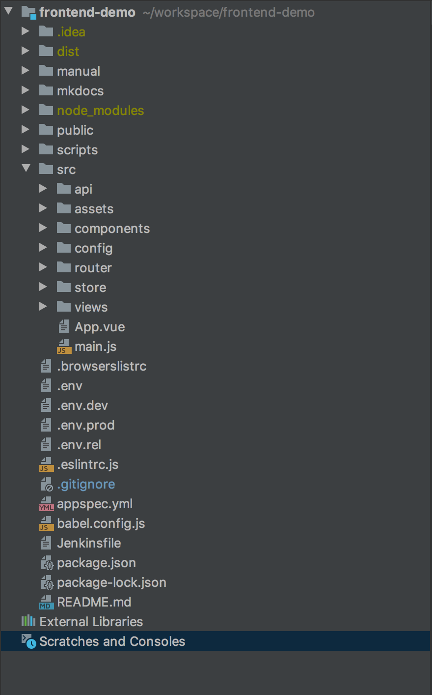

Directory 구조
1. 전체 디렉토리 구조

2. 디렉토리 구조 설명
1) manual
README.md 가이드 문서에 사용하는 메뉴얼 디렉토리
2) mkdocs
mkdocs 가이드 문서를 구성하는 파일 디렉토리
실행방법 :
$ cd ~/workspace/frontend-demo/mkdocs
$ mkdocs serve
3) dist
프로젝트를 build하여 배포할때 생성되는 디렉토리
4) node_modules
npm module을 모아놓은 디렉토리
5) public
vue 기본 구성 폴더로 index.html파일과 favicon.ico파일 디렉토리
6) scripts
CICD를 위한 codedeploy 작업을 위하여 사용하는 디렉토리
7) src
실제 프로젝트 개발에 필요한 소스 디렉토리
7-1) api
API 호출을 위한 axios 공통 적용 디렉토리
7-2) assets
어플리케이션에 사용하는 이미지 및 css 파일 디렉토리
7-3) components
vue component 를 모아 놓은 디렉토리 (업무별 폴더 구분하여 사용)
7-4) config
프로젝트에 사용하는 설정이 모여있는 디렉토리
7-5) router
vue-router를 설정하는 디렉토리
7-6) store
vuex 설정 디렉토리
7-7) views
vue main 화면 디렉토리 (하위 vue component와 연결)